We are tackling climate justice
As an organization, we recognize the lack of diversity, inclusiveness and representation within the environmental movement. In order to effectively tackle the climate crisis, which disproportionately affects marginalized, rural and communities of color, we need to build a powerful movement that crosses racial, economic and geographic divides.
To address this issue, we recently launched our Climate REDI program to create greater Representation, Equity, Diversity, and Inclusion in the climate movement.
We believe that in order to combat the climate crisis, we must be REDI; we must build a movement that is centered on Representation, Equity, Diversity and Inclusion.
 

Solidarity Symposium 2020
Join a diverse panel of experts for the 1st in a 5-part web series to discuss the connection between the climate and health crisis, addressing inequalities, and how we can stand together to fight for change. Throughout the discussion, we'll be answering questions and using interactive audience polls. Each upcoming webinar will include a discussion on how the climate and health crisis intersects with social justice issues including education, immigration, elections, and the economy.
The Intersection of the Climate & Health Crisis
The COVID pandemic drew attention to the flaws and inequities in our healthcare system and made it obvious that the US, and the world, are not prepared to respond to a global-level pandemic. At the same time, we are entering a climate crisis that is beyond comprehension - one that the US, and the world, are also not adequately prepared to address. COVID-19 brought the world to its knees and increasing air pollution has made people more susceptible to respiratory infections, such as COVID. Similar to COVID, climate change is disproportionately impacting marginalized communities and communities of color. As climate change worsens, we are likely to see more pandemics that will further cripple our struggling healthcare systems and deepen the inequities that already exist.
Moderated By
The intersection of climate, health & election issues
Participation in free and fair elections becomes complicated when people have to maintain social distance rules. It is increasingly difficult to count, verify or collect ballots while maintaining social distance rules to protect health and safety. Wisconsin recently saw an increase in COVID cases following in-person elections. In addition, extreme and unpredictable weather can create difficulties for people to get to the polls - waiting outside a polling center in the heat/cold, or waiting inside with poor ventilation systems will create undue risk for thousands of people. Reductions in polling hours, locations and resources usually affect marginalized and communities of color as we recently witnessed in Georgia. How do we create fair, equitable and accessible elections as we move into an age of increased vulnerability to climate change and more pandemics?
Moderated By
Colorado Secretary of State - Jena Griswold
Denver County Clerk & Recorder - Paul López
State ACLU Public Policy Director - Denise Maes
Amanda Gonzalez, Executive Director Colorado Common Cause
The Intersection of the Climate & Health Crisis
The COVID pandemic drew attention to the flaws and inequities in our healthcare system and made it obvious that the US, and the world, are not prepared to respond to a global-level pandemic. At the same time, we are entering a climate crisis that is beyond comprehension - one that the US, and the world, are also not adequately prepared to address. COVID-19 brought the world to its knees and increasing air pollution has made people more susceptible to respiratory infections, such as COVID. Similar to COVID, climate change is disproportionately impacting marginalized communities and communities of color. As climate change worsens, we are likely to see more pandemics that will further cripple our struggling healthcare systems and deepen the inequities that already exist.